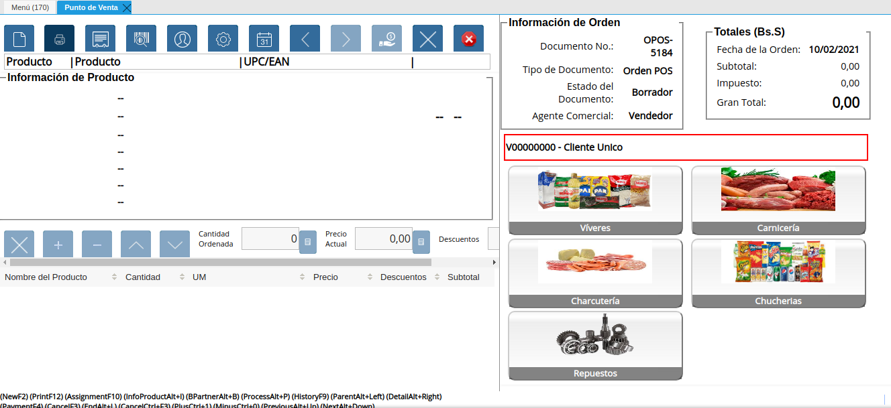
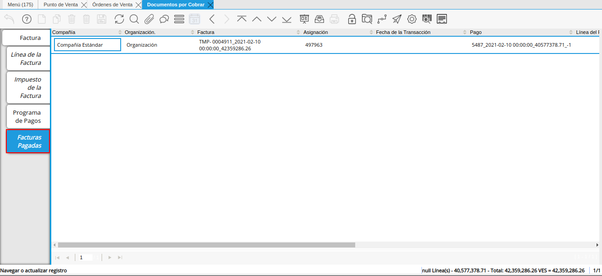

Toma de Pedido
El proceso toma de pedido consiste en la venta de los productos por medio del documento “Orden de Venta”, en el cual se cargan los datos del cliente, los productos y el cobro. Al realizar el cobro de la misma, se generan de manera automática los documentos “Cobro”, “Entrega” y “Factura por Cobrar”.
El documento del cobro se genera en la ventana “Caja”, con la cuenta caja pos en la cual se realizó dicho cobro. Este es asociado a la línea del registro de cierre de caja de la cuenta “Caja POS”, creado al momento de la apertura de caja.
Adicional a ello, el documento “Factura por Cobrar”, es generado en la ventana “Documentos por Cobrar”. Mientras que el documento “Entrega”, es generado en la ventana “Entrega (Cliente)”.
Para mejor referencia de lo explicado anteriormente, se presenta a continuación el diagrama del proceso “Toma de Pedido POS”, con la finalidad dar a conocer el comportamiento de ADempiere ante dicho proceso.
Imagen 1. Diagrama de Toma de Pedido POS

Ejecución del Proceso
Ubique y seleccione en el menú de ADempiere, la carpeta “Gestión de Ventas”, luego seleccione la carpeta “Órdenes de Venta”, por último seleccione la carpeta “Punto de Venta”, finalmente seleccione la ventana “Punto de Venta”.
Imagen 2. Menú de ADempiere

Podrá visualizar la ventana “Selecciona Terminal PDV”, para seleccionar el terminal del punto de venta con el cual va a gestionar la toma de pedido y posteriormente la opción “OK” para cargar la ventana “Punto de Venta” para el terminal seleccionado.
Imagen 3. Ventana Selecciona Terminal PDV
Note
Esta opción es habilitada cuando el socio del negocio vendedor tiene configurado más de un terminal de punto de venta.

La interfaz de la ventana “Punto de Venta”, se encuentra definida de forma específica en el documento Interfaz de Punto de Venta, elaborado por ERPyA. Realice cada uno de los procesos explicados a continuación para obtener un resultado exitoso en la toma de pedido por el punto de venta.
Seleccione el icono “Registro Nuevo” para crear un nuevo registro de orden de venta.
Puede consultar el material Barra de Herramientas del Punto de Venta, para conocer la funcionalidad de la misma.
Imagen 4. Icono Registro Nuevo de la Ventana Punto de Venta
Ubique la información del cliente en el Panel de Socio del Negocio Cliente.

Imagen 5. Seleccionar Cliente para la Venta
Note
Recuerde que debe cambiar la información del socio “Cliente Unico” por la información del cliente real de la venta, ya que esta información saldrá impresa en la factura fiscal generada al concluir la venta.
Puede proceder a cargar los productos desde el Catálogo de Productos. De igual manera, puede realizar este proceso desde el Panel de Búsqueda de Productos
Imagen 6. Carga de Productos
Luego de cargar todos los productos a la orden de venta, la información detallada de los mismos podrá ser visualizada en la Sección de Información de Producto. De igual manera, se puede apreciar en la Línea de la Orden de Venta.
Imagen 7. Información de los Productos
La cantidad a vender de cada producto, el descuento a aplicar y su respectivo precio, pueden ser modificados en la Barra de Edición de Productos.
Imagen 8. Modificar Cantidad de Productos a Vender
Finalmente, podrá visualizar la Información de la Orden y sus Totales (Bs.S).
Imagen 9. Información y Montos Totales de la Orden


Cobrar Pedido
Luego de haber cargado todos los productos de la venta en la orden, debe seleccionar el icono “Pago” para generar el cobro de los mismos.
Imagen 10. Icono Pago de la Ventana Punto de Venta
La selección de este icono, habilita el recuadro del cobro, mostrando el total a pagar de la orden, los campos para ingresar la forma de pago, la moneda y el monto. Así como también, las opciones para agregar otro pago o eliminar un pago existente.
Imagen 11. Recuadro del Cobro
Adicional a ello, se muestra los siguientes campos:
El campo “Total del Pago”, indica la suma de todos los montos ingresados en las diferentes formas de pago seleccionadas.
El campo “Abierto”, indica el monto pendiente por pagar de la orden de venta.
El campo “Cambio”, indica el monto total que debe ser devuelto al cliente por el concepto “Cambio del Pago”.
El check “Cobro Completo”, debe ser utilizado cuando se presente un caso de cobro en efectivo de monto con decimales y se requiera realizar un cobro mayor (completo), para posteriormente generar el egreso por el cambio del mismo. ADempiere, refleja en el campo “Cambio”, el monto correspondiente al cambio que debe ser entregado al cliente.
Note
Cuando el monto a pagar en efectivo es en divisas y con decimales, se tilda el check “Cobro Completo” y se ingresa el monto real a cobrar en el campo “Monto”.
Suponiendo que el día “10/02/2021”, se tiene la orden de venta “OPOS-5184” con monto total a pagar de “75.917.563,54” y el cliente decide cancelar con dólares en efectivo, los siguientes datos serían:
Tasa de Cambio USD: 1.933.493,43
Forma de Pago Seleccionada: Caja (efectivo)
Moneda Seleccionada: USD
Monto Total de la Orden en Moneda USD: 39,264453844045 (monto resultante del “Monto Total de la Orden” entre la “Tasa de Cambio” de la moneda seleccionada)
Monto Real a Pagar: 40,00 (monto que debe ser ingresado en el campo “Monto”)
Cambio en Moneda VES: 1.422.173,66 (cambio que debe ser entregado al cliente)
Cobro Completo: SI (tildar)
El cobro de los productos cargados en la orden de venta se puede ejecutar de diferentes formas, explicadas a continuación.

Procedimiento Regular con una Forma de Pago y una Moneda Específica
Seleccione en el campo “Forma de Pago”, la forma utilizada por el cliente para pagar los productos cargados en la orden de venta.
Imagen 12. Campo Forma de Pago del Pago Regular del Icono Pago de la Ventana Punto de Venta
Note
Para la forma de pago “Caja”, no es obligatorio ingresar un valor en el campo “No. de Referencia”. Sin embargo, se utiliza para ingresar el serial del billete recibido o cualquier otra forma de identificación del cobro.
Adicional a ello, para las otras formas de pago si es un valor obligatorio y corresponde al número de referencia de la transacción efectuada en el banco. Este valor es necesario al momento de realizar las conciliaciones bancarias.
Seleccione en el campo “Moneda”, la moneda utilizada por el cliente para pagar los productos cargados en la orden de venta.
Imagen 13. Campo Moneda del Pago Regular del Icono Pago de la Ventana Punto de Venta
Introduzca en el campo “Monto”, el monto pagado por el cliente con la forma de pago y moneda seleccionada.
Imagen 14. Campo Monto del Pago Regular del Icono Pago de la Ventana Punto de Venta
Tilde el check “Cobro Completo”, para que posteriormente sea generado el egreso por el cambio del monto pagado por el cliente.
Imagen 15. Check Cobro Completo del Pago Regular del Icono Pago de la Ventana Punto de Venta
Seleccione la opción “OK”, para generar el cobro de los productos cargados en la orden de venta.
Imagen 16. Opción OK del Pago Regular del Icono Pago de la Ventana Punto de Venta
Seleccione el icono “Cancelar”, para cancelar el registro del cobro que encuentra realizando.
Imagen 17. Cancelar Cobro


Procedimiento Especial con Diferentes Formas de Pago y Monedas
Seleccione en el campo “Forma de Pago”, la forma utilizada por el cliente para pagar los productos cargados en la orden de venta.
Imagen 18. Campo Forma de Pago del Pago Especial del Icono Pago de la Ventana Punto de Venta
Note
Para la forma de pago “Caja”, no es obligatorio ingresar un valor en el campo “No. de Referencia”. Sin embargo, se utiliza para ingresar el serial del billete recibido o cualquier otra forma de identificación del cobro.
Adicional a ello, para las otras formas de pago si es un valor obligatorio y corresponde al número de referencia de la transacción efectuada en el banco. Este valor es necesario al momento de realizar las conciliaciones bancarias.
Seleccione en el campo “Moneda”, la moneda utilizada por el cliente para pagar los productos cargados en la orden de venta.
Imagen 19. Campo Moneda del Pago Especial del Icono Pago de la Ventana Punto de Venta
Introduzca en el campo “Monto”, el monto pagado por el cliente con la forma de pago y moneda seleccionada.
Imagen 20. Campo Monto del Pago Especial del Icono Pago de la Ventana Punto de Venta
Introduzca en el campo “No. de Referencia”, el número de referencia correspondiente a la transacción efectuada en el banco.
Imagen 21. Campo No. de Referencia
Seleccione en el campo “Banco”, el banco donde fue efectuada la transacción.
Imagen 22. Campo Banco
Seleccione el icono “Más”, para habilitar otro grupo de campos de pago e ingresar la siguiente forma de pago utilizada por el cliente para terminar de cancelar la orden de venta.
Imagen 23. Otra Forma de Pago del Pago Especial del Icono Pago de la Ventana Punto de Venta
Note
Si requiere cargar otra forma de pago adicional a las dos anteriores, puede seleccionar nuevamente el icono “Más” y proceder a cargar el cobro con dicha forma de pago.
Para eliminar una forma de pago ya seleccionada previamente, seleccione el icono “Menos”.
Imagen 24. Eliminar una Forma de Pago del Icono Pago de la Ventana Punto de Venta
Seleccione la opción “OK”, para generar el cobro de los productos cargados en la orden de venta.
Imagen 25. Opción OK del Pago Especial del Icono Pago de la Ventana Punto de Venta


Note
Al completar el proceso para generar el cobro de los productos ingresados a la orden de venta POS, se crea automáticamente un documento de cobro en la ventana “Caja”, por cada forma de pago utilizada.
Adicional a ello, se crea una factura por cobrar en la ventana “Documento por Cobrar”, asociada a la orden de venta POS y los diferentes cobros asignados a dicha orden.
Es importante resaltar que al completar el proceso, todos los documentos son generados en estado “Completo”.
Consultar Factura Generada
Ubique la orden de venta generada en la ventana “Órdenes de Venta”, luego seleccione el icono “Visualiza Detalle (Donde es Usado)” y finalmente haga clic sobre la opción “Documentos por Cobrar”, para acercar la factura de la venta.
Imagen 26. Orden de Venta

Al acercar el documento por cobrar, podrá visualizarlo de la siguiente manera
Imagen 27. Factura por Cobrar

Consultar Cobro Generado
Ubique el documento de cobro generado en la ventana “Documentos por Cobrar” y luego seleccione la pestaña “Facturas Pagadas”, para visualizar las asignaciones de los diferentes documentos de cobro generados en la ventana “Caja”.

Imagen 28. Pestaña Facturas Pagadas de la Ventana Documentos por Cobrar
Seleccione el icono “Cambiar Mono/Multi Registro” ubicado en la barra de herramientas de ADempiere para cambiar la vista y visualizar la línea del registro de asignación del cobro que requiere acercar, posteriormente copie el valor del campo “Pago”.
Imagen 29. Icono Cambiar Mono/Multi Registro y Copiar Número del Cobro

Ubique el registro del cobro en la ventana “Caja”, con ayuda del valor copiado anteriormente del campo “Pago”.
Imagen 30. Documento de Cobro Generado en Caja

Consultar Registro en Cierre de Caja
Cada cobro desde el punto de venta genera un documento de ingreso en la ventana “Caja”, por cada documento de cobro generado se crea una línea con el cobro asociado en la pestaña “Línea de Cierre de Caja”, de la ventana “Cierre de Caja” correspondiente al registro de la “Caja 04”, creado en estado “Borrador al realizar la apertura de caja.
Imagen 31. Cobro Generado en Cierre de Caja